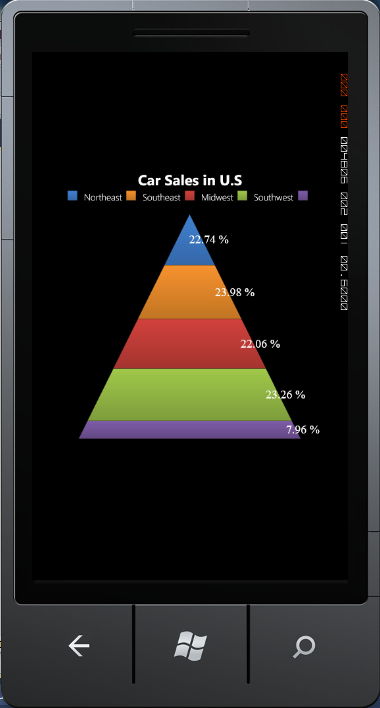

Pyramid chart is similar to the Funnel chart. It is often used for geographical purposes. The Pyramid chart displays the data which totals to 100 precent. This type of chart is a single series chart, representing the data as portions of 100 precent, and this chart does not use any axes.
The following attached properties can be used to customize the Pyramid chart.
|
Attached Property |
Type |
Description |
|
ExplodedIndex |
int |
Gets and sets the exploded index of pyramid segment. |
|
GapRatio |
double |
Gets and sets the Gap between two path segments in the Funnel. The GapRatio value must be between 0 to 1. |
|
FunnelMode |
ChartPyramidMode |
There are two modes that can be used to draw Pyramid charts. They are Linear and Surface modes. |
The following code example illustrates how to create a Pyramid Chart.
|
[XAML]
<syncfusion:ChartSeries Margin="0,0" Type="Pyramid" syncfusion:ChartDoughnutType.DoughnutCoefficient="0.5" Stroke="Transparent" > <syncfusion:ChartSeries.AdornmentsInfo> <syncfusion:ChartAdornmentInfo SegmentVerticalAlignment="Center" SegmentHorizontalAlignment="Right" Visible="True" SegmentIsOut="True" SegmentShowLine="True" AdornmentsPosition="TopAndBottom" SegmentLabelContent="Percentage" SegmentLabelFontSize="18" > </syncfusion:ChartAdornmentInfo> </syncfusion:ChartSeries.AdornmentsInfo> </syncfusion:ChartSeries>
|
|
[C#]
ChartArea area = new ChartArea();
// Create Pyramid Chart. ChartSeries series = new ChartSeries(); series.Type = ChartTypes.Pyramid;
// Create and initialize the Series Segment Label. ChartAdornmentInfo adornment = new ChartAdornmentInfo(); adornment.Visible = true; adornment.SegmentLabelContent = LabelContent.YValue; series.AdornmentsInfo = adornment; area.Series.Add(series); |

Figure 42 : Pyramid Chart